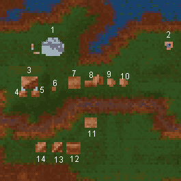

| 1 | Training (up to level 22) |
| 2 | Fountain of Magic (+20 SP restoration) [Quest] |
| 3 | House of Healing |
| 4 | House with nothing of importance |
| 5 | Winston Schezar who will give you the Destroy Crystal Quest |
| 6 | Fountain: +20 Migth boost |
| 7 | Tavern, fill up for 10 days |
| 8 | Wapons: Hammer and Tongs |
| 9 | Expert: Chain Armor Training |
| 10 | Expert: Perception |
| 11 | General Store: The Little Magic Shop |
| 12 | Armor: Abraham's Metalworks |
| 13 | House with a NPC who will give you +10% gold and takes 5% gold |
| 14 | House with nothing of importance |
Leave us a message at: mgrounds@hotmail.com